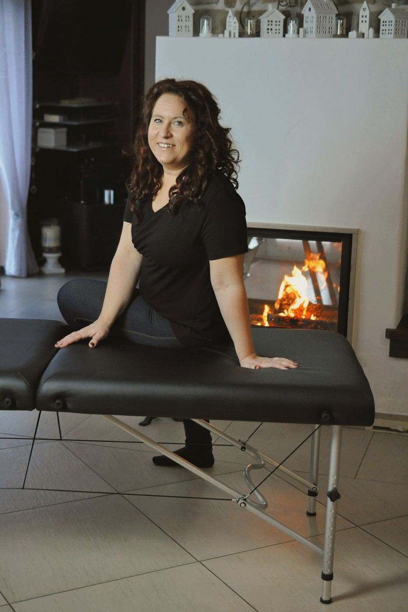
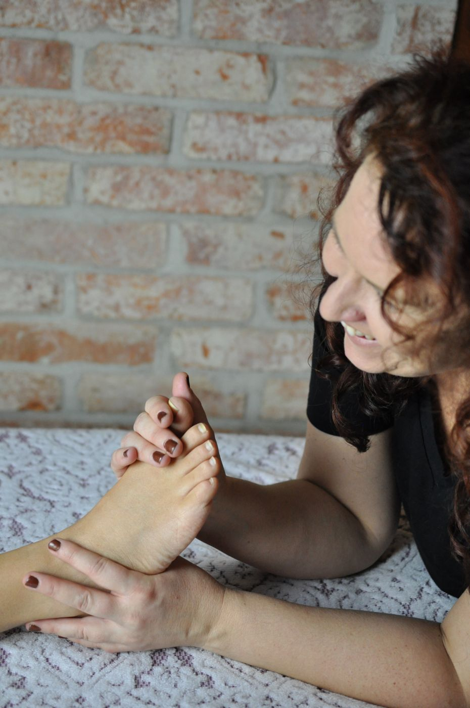
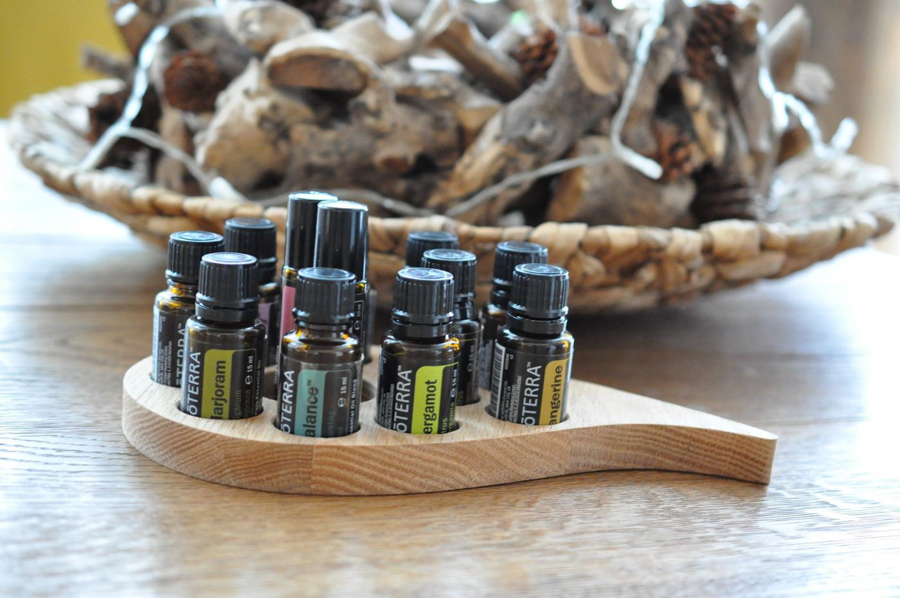
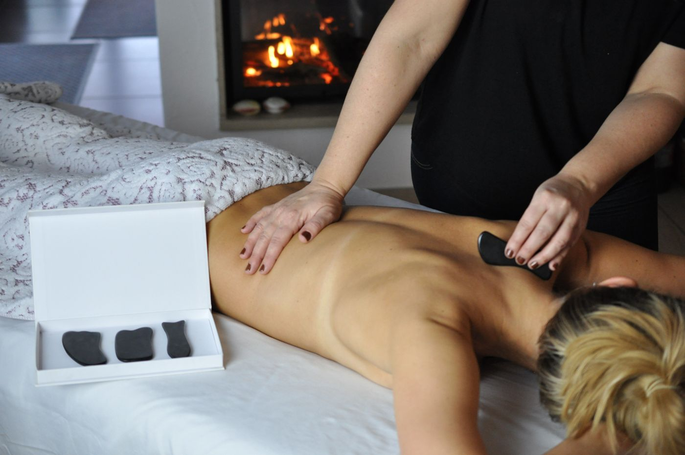

Hallo, ich bin Manuela
Mir ist wichtig, den Menschen als Ganzes zu sehen und sich nicht nur auf einen bestimmten Bereich zu konzentrieren.
Der menschliche Körper hat mich schon immer fasziniert, denn jeder Mensch ist so einzigartig und wunderbar gemacht. Deshalb habe ich eine Heilpraktiker-Ausbildung begonnen. Ich wollte den Körper verstehen und Menschen von Herzen helfen, achtsam mit sich umzugehen.
Während der Ausbildung wuchs meine Leidenschaft für Massagen, und ich habe zeitgleich meine Massage-Ausbildung gemacht. Die Heilpraktiker-Ausbildung habe ich erfolgreich abgeschlossen, mich dann aber für die Massagen entschieden. Ich praktiziere nicht als Heilpraktikerin, doch mein Wissen fließt in jede Massage mit ein.
Ich bin verheiratet, Mama von zwei Kindern und Hundemama. Aromaöle, Musik und Wärme gehören bei mir immer dazu, damit du wirklich abschalten kannst.
Ich wohne in Eichenried und komme zu Frauen in Moosinning, Erding, Freising, Markt Schwaben und Umgebung.
Meine Ausbildungen
Ich lerne ständig dazu, damit du bei mir immer gut aufgehoben bist.
- 2026AtemtrainerinBlessingway-Ritualleiterin
- 2025TiefengewebsmassageEntspannungstrainerinAchtsamkeit
- 2024Stress- und Burnout-CoachBabymassage-Kursleitung
- 2023–24Reflexologie
- 2023SchwangerschaftsmassageWochenbett-Massage & RebozoHot StoneAromatherapie
- 2022Klassische MassageNaturheilkunde
- 2020Wellness-Massagen Fachpraktikerin
- 2019–21Heilpraktiker-Ausbildung (nicht praktizierend)
Nur für Frauen
Ein geschützter Rahmen, in dem du dich wohlfühlen und ganz fallen lassen kannst.
Bei dir zu Hause
Keine Fahrt, kein Parkplatz, keine Eile. Nach der Massage bleibst du einfach liegen.
Mit Zeit und Ruhe
Ich nehme mir Zeit für dich und dafür, was du gerade brauchst.


